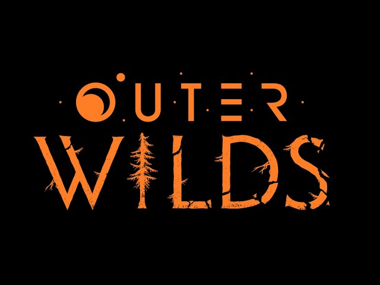

Outer Wilds

| Release Date: | May 28rd, 2019 |
| Genre: | Open World Mystery |
| Developer: | Mobius Digital, Annapurna Interactive |
| Platform: | Nintendo Switch, Playstation, Xbox, & PC |
| Details: | Website |
Outer Wilds is a space exploration game developed by Mobius Digital. This is a game that I've heard people sing praises for, saying that it's best to go into blind as well. So, I stopped reading about it, picked it up, and started giving it a go. I can see why people recommend that, as learning too much about the game takes away from the journey through it. So, if you like puzzle games and taking your time to put clues together to solve progression, then this is a game for you. Below I won't get too far into spoiler territory, but the less you know, the more pure the experience is.
The game takes place on your character's first day as an astronaut. Getting the launch codes, you set off into the solar system with no real direction, just head out there an see what you find. After some time however, the sun goes supernova, engulfing the entire solar system in its light, killing you. You, however, retain your memories and start back at the beginning of that day. Now with the launch codes at the beginning of the day and possibly many questions as to what happened, you set off again to explore the solar system looking for answers.
It's a fantastic opening to the game, introducing you to the gameplay loop in an organic manner. It starts itself out as a space exploration game, but then turns into a puzzle game. As you explore the different planets, you'll come across notes and ruins left behind by an ancient civilization, giving you clues to dive deeper into the mysteries of each planet. Besides questions marked within your ship's log, there's no direction given to the player. It's up to them to go through the notes they've discovered, think where haven't they've been yet, pick up on the clues given, to answer some of their questions, just to unravel more.
As you explore, you're greeted with many different environments with their own extreme occurring. One planet has a hollow core with a hanging city beneath the crust, with the crust getting destroyed over time by the nearby volcanic moon. Another planet is a complete water planet with a constant storm engulfing the entire planet. Not only are these planets large in their scope and unique in environment, but they change over time. So you may gain access to some areas only early or late within a single loop, giving more incentive to constantly return to the planets.
Overall Thoughts
I don't have much to say about the game, because I haven't completed it. While I can see why people talk so highly about the game, I don't think it's entirely for me. At least, I think I need to revisit it a different time. I went into this thinking it'd be a fun, relaxing space exploration game, and wasn't expecting it to unravel into a large puzzle. While I don't mind puzzles in games, I like them a lot, but games with puzzles as their primary focus I tend to burn out on quickly. Here I got about 7 hours in and begun to lose desire to play, as I had no direction. I had clues about where I'm missing information, but didn't know where that information is. That's the point of the game, I know, but it just isn't the kind of game I wanted to play.
Perhaps I'll return to this game at another time when I want to sink my teeth into a true puzzle. If I do, I'll definitely come back to this page to update it with those future thoughts. For now though, it'll remain an unsolved mystery for me, but don't let that stop you from exploring the cosmos.